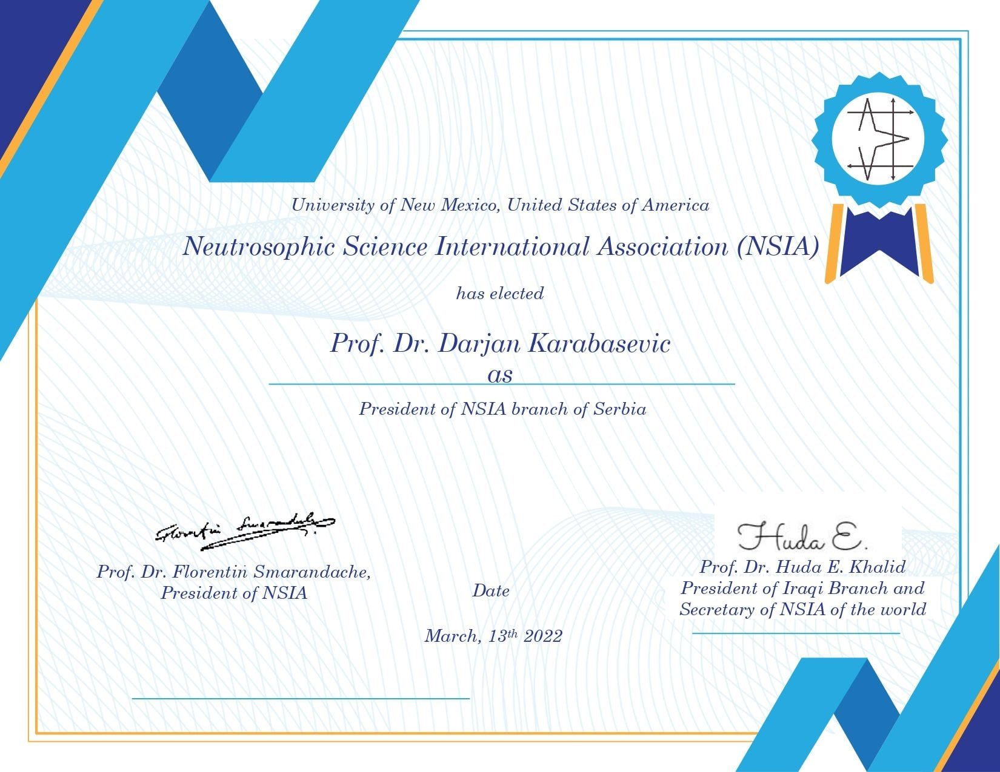
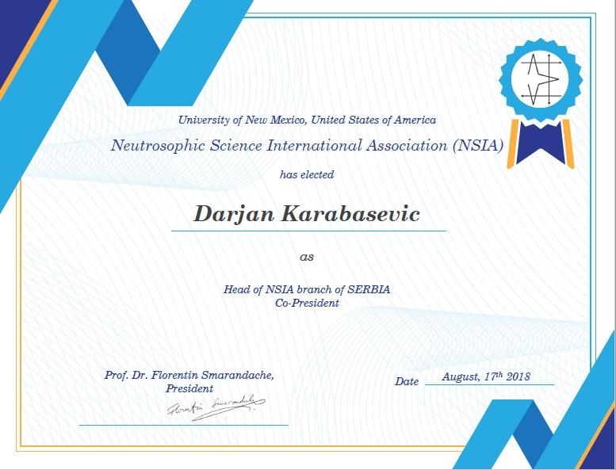
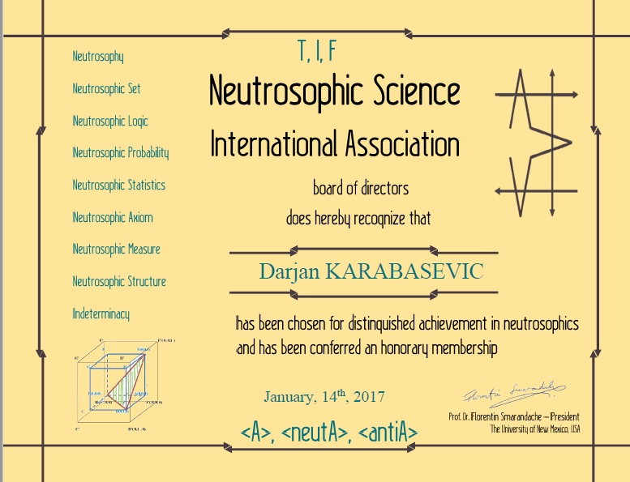

Ph.D. in Computer Science & Ph.D. in Management
Full Professor of Informatics and Management and Vice-dean at the Faculty of Applied Management, Economics and Finance, University Business Academy in Novi Sad. Holds a Ph.D. in Computer Science (University of Novi Pazar) and a Ph.D. in Management and Business (John Naisbitt University).
Author or co-author of over 200 scientific papers, of which more than 60 are published in journals with Impact Factor. Co-creator of the WISP, ARCAS, PIPRECIA, and PIPRECIA-S methods. Research spans multiple-criteria decision-making, fuzzy, intuitionistic, neutrosophic, and grey sets theory, and computational intelligence.
Member and President of the Serbian branch of the Neutrosophic Science International Association (NSIA). Member of the International Society on Multiple Criteria Decision Making (MCDM) since 2016.
Editor-in-Chief of the Journal of Process Management and New Technologies (JPMNT). Editor of Axioms (SCIe, IF: 1.824). Member of the editorial boards of several international journals. Has reviewed over 200 papers for Springer, Elsevier, Taylor & Francis, MDPI, and others.


